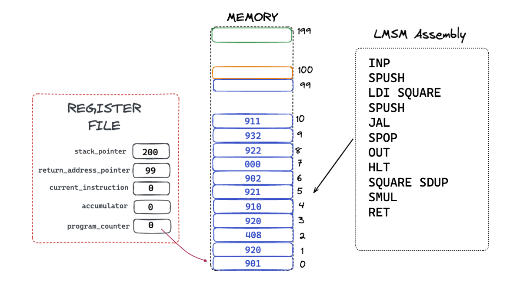
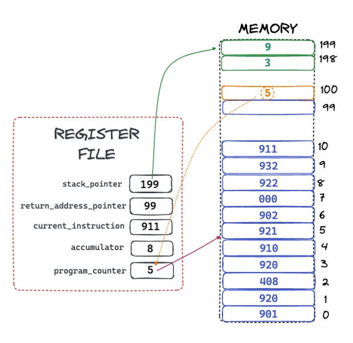
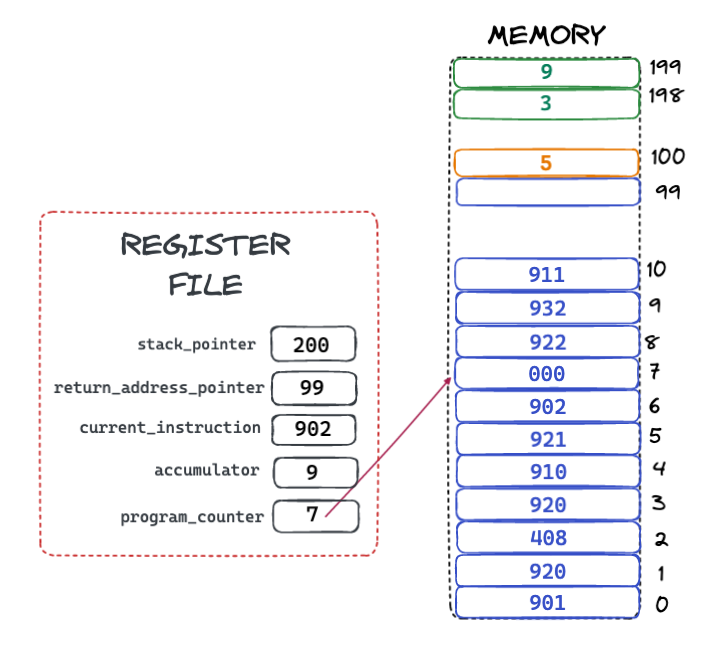

🙋 The Little Man Stack Machine
Functions On The LMSM
The LSMS is designed to make functions, including recursive function calls, possible, despite the limited resources available to the system.
This is accomplished by two registers: the stack_pointer register and the return_address_pointer
register.
The stack_pointer register points to the "top" of the value stack, and grows down in
memory. The value stack holds values that are used for computation, such as two numbers that are to be added.
The return_address_pointer register points to the "top" of the return address stack, and grows up in
memory. The return address stack holds the return address(es) for a series of function calls.
The JAL and RET Assembly Instructions
Let's look at how the Jump-And-Link (JAL) and Return (RET) instructions work.
Here is a simple example of an LSMM assembly program that asks a user for input, calls a function to square that number, and then prints the result. Here is the assembly and the assembled machine instructions:
A fair amount going on here, so lets go through the program first
- We ask the user for input and then push that value onto the value stack
- We then load the address of the instruction labeled
SQUAREinto the accumulator - We then push that value onto the value stack
- Next we call the "Jump And Link" instruction
- After that we (somewhat mysteriously) pop a value off the value stack and print it.
- Finally, we halt
- Below all that, starting at a location labled
SQUARE, we duplicate the top of the stack - We then multiple the top two values on the value stack and replace them with the result
- Finally we call the "Return" instruction
We can generate the same machine instructions, and clarify our code a bit, by using the CALL
pseudo-instruction:
This generates the same machine code, but is more readable: it is clearer that we are calling the function
defined at memory location SQUARE now.
The LMSM Calling Convention
What is the mysterious SPUSH just before the CALL instruction, and what is the
SPOP after it? To understand what these instructions are doing we need to discuss the concept
of a Calling Convention.
A Calling Convention is a mechanism whereby a function receives arguments from a caller and returns a value to the caller.4
In the case of the LMSM, the calling convention is very simple: arguments are passed to the function on the value stack, and the result of the function is left on the top of the value stack for the caller.
In this program, we wish to pass the value that the user entered to the SQUARE function, so we
"push" it before we call the function.
The SQUARE function then duplicates this value and issues a SMUL instruction, which
multiplies the parameter by a duplicate of itself, effectively squaring the value and leaving that
result on the top of the stack.
At this point, the SQUARE function can return to the caller. The caller knows that the result
of the function call has been left on the top of the stack, so it can "pop" it off (from the stack into the
accumulator) and then print it out, and, finally, halt.
The caller and the callee use the value stack to communicate with one another: the caller passes parameters in on the value stack and the caller passes the return value out on the top of the stack.
A Function Call Step-by-Step
Let's go step by step and watch how this function call works.
Step 1: Get Input From User
The first instruction tells the LMSM to ask the user for input. Let's say the user entered 3.
After this instruction is executed the machine will look like this:
Note that the accumulator now has the value 3 in it.
Step 2: Push The User Input Onto The Stack
The next instruction tells the LMSM to push the value of the accumulator onto the stack, because it will be
the argument the the SQUARE function. When this instruction has executed, the machine will
look like this:
The stack pointer has been decremented from 200 to 199, and the accumulator value
3 has been stored onto the "top" of the value stack. Recall that the value stack "grows"
downward, which is a common situation with computers.
Step 3: Load The Address Of The Function
The next instruction tells the LMSM to load the memory address of the function that is going to be called
into the accumulator. The function we are going to call is located at memory location 8.
When the instruction is complete the value 8 sits in the accumulator
Step 4: Push The Function Address Onto The Stack
In the final setup instruction before actually jumping to the SQUARE function code, the value
8 is pushed onto the stack.
Now we are ready for the magic of the Jump & Link Instruction
Step 5: The Magic Jump & Link Instruction
We now get to the most magical part of the function call mechanic, the Jump & Link instruction. This instruction does quite a bit:
- It consumes the top of the stack
- It sets the program counter to the value that was consumed from the top of the stack
- It pushes the address of the next instruction onto the return address stack
You can see that the value stack pointer has been incremented, effectively popping off the top value. The
return address pointer has also been incremented, but that stack is different in that it grows up,
rather than down. The return address of 5 has been placed on the return address stack because,
when the SQUARE function returns, we wish to jump back to that address.
This is really the crux of the whole function call and is very important to understand. Other computer systems have different mechanisms for storing return addresses (usually there is only one stack) but the core concept is the same: jump to some location that contains a function definition and simultaneously save address of the next instruction to return to when that function is complete.
This is how we impose the (completely immaterial) idea of "functions" on top of dumb memory slots. This abstraction is what allows us to build incredibly complicated software on top of these machines. Some trick!
Step 6: Duplicating The Argument
At this point, the function SQUARE is executing, and the first thing it is going to do is duplicate
the top of the value stack. Recall that the argument to the SQUARE function has been placed on
the stack before it was called.

The machine now has two values on the value stack, which sets it up to do a stack multiplication on the next step.
Note that the stack pointer has been decremented and the top of the value stack is now at memory location 198.
Step 7: Multiplying The Two Values
It is finally time to do the actual work of the SQUARE function, were we multiply the top two
values together and replace them with the result.
Note that the stack pointer has been incremented and that the result value, 9 sits on the "top"
of the value stack.
Step 8: Returning To The Caller
This is the second part of the magic of a function call at the assembly level: returning to the caller. This is simpler than the Jump & Link instruction: we can just pop the value on the top of the return address stack into the program counter, and we are done:

Note that this is following the calling convention defined for the LMSM: the result of the SQUARE
function has been left on the top of the value stack.
Step 9: Popping The Return Value Off The Value Stack
We want to print the return value of the SQUARE function out, but we can only print from the
accumulator register, so we need to first pop the value off the stack and into the accumulator:
Step 10: Printing The Value
Finally, we print the value out, with a successful function call completed!

The next instruction is a HLT, which stops the machine. We will omit a diagram for this step.
A Function Call... Done!
So that is a complete walk through of a function call on the LMSM. Yes, the LMSM is a very simple and resource constrained machine, but this demonstrates the core concepts of function calls as found on more sophisticated machines as well.
Hopefully you have a better sense of how all this magic works now.